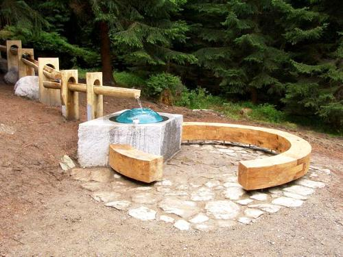

Lesní kaple se nachází cca 2 km jižně od Srní v lese nedaleko Vchynicko – Tetovského kanálu. O tomto místě se vždy vyprávěli nevídané povídky. Docházelo zde k zázračným uzdravením a byly tu zde zachráněny dvě ženy od útoku medvěda. „ Dvě ženy šli jednoho dne na trávu a museli projít částí pralesa, kde jim přes cestu ležely spousty vyvrácených kmenů. Při přelézání jednoho takového kmene s hrůzou spatřily velkého hnědého medvěda, který divoce bručel, cenil zuby a přibližoval se k oběma vyděšeným ženám. V hrůze volali obě o pomoc Matku Boží a utíkaly pryč. Medvěd je pronásledoval, ale obě ženy se zachránily. Z vděčnosti pověsily na kmen stromu skleněný obrázek Sedmibolestné Matky Boží. U tohoto obrázku se pak událo ještě mnoho příhod a zázračných vyléčení.“ První kaple zde byla postavena 1820, která byla malá, a proto byla v roce 1860 vybudována nová a větší kaple. Stavba byla ale provedena tak špatně, že po 7 letech zchátrala. Byly konány peněžité sbírky až do roku 1901, kdy byl obnos dostatečný. Stavební místo daroval Josef Gruber ze Srní, stavební dříví kníže Schwarzenberg, ostatní materiál různí občané ze Srní. Na místě staré kaple byl postaven železný kříž. Kaple byla armádou srovnána se zemí v roce 1957. NP Šumava společně s Občanským sdružení Karel Klostermann obnovili toto místo. Slavnostní otevření proběhlo v roce 2006. Bývalé kaple dnes připomínají nově přiznané základy. Byl zde vybudovány koryta se zázračnou vodou až k poutnímu místu. (http://www.sumava.net)
Nevštivte jejich web